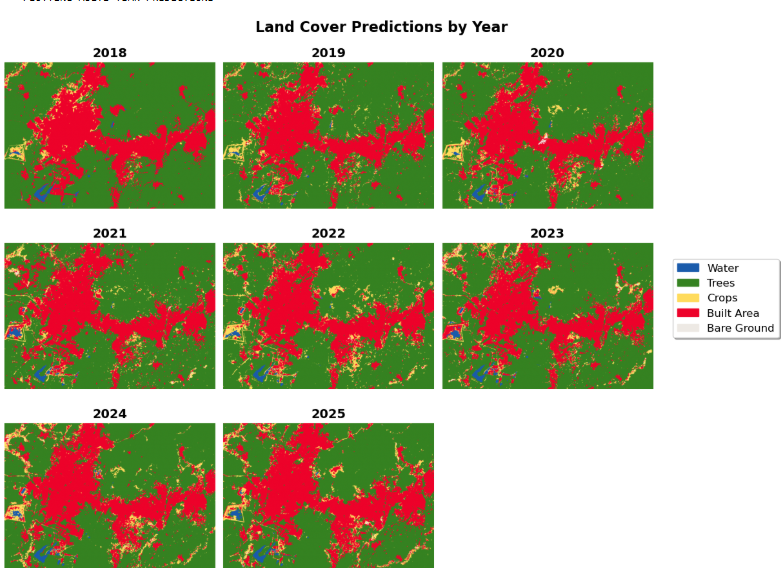
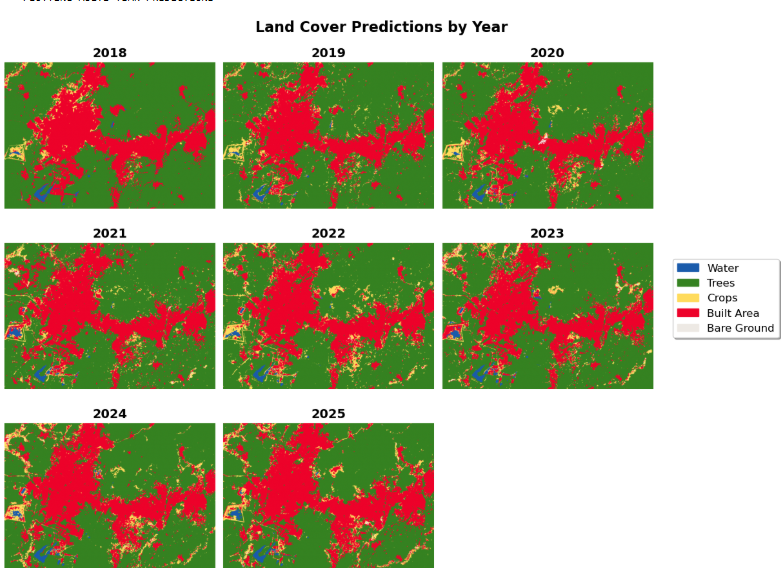

COMPUTER VISION
Specialized in Object Detection (YOLO, TensorFlow) and Semantic Segmentation. Building systems that help machines "see" and understand unstructured environments.
Machine Learning Engineer | Computer Vision Specialist

Specialized in
Autonomous Perception
I am an engineer by training and a data scientist by passion. With a background in Mechanical Engineering, I bring a unique physics-grounded perspective to AI. Currently, I am focused on Autonomous Vehicle Perception—bridging the gap between raw sensor data and actionable intelligence using Deep Learning and Computer Vision. I build production-grade pipelines on AWS, ensuring models scale in the real world.

Specialized in Object Detection (YOLO, TensorFlow) and Semantic Segmentation. Building systems that help machines "see" and understand unstructured environments.

Applying Time-Series analysis and anomaly detection to high-frequency sensor data. Translating signals into vehicle health monitoring and diagnostic insights.

Architecting robust MLOps pipelines on AWS (Sagemaker, EC2). Focused on the deployment and scalability of AI models in production environments.

PYTHON
PYTORCH

TENSORFLOW

OPENCV
AWS

DOCKER

SQL

C++
COMPUTER VISION

DEEP LEARNING

SENSOR FUSION

MLOPS
From industrial IoT pipelines to computer vision systems, I build scalable technology that solves complex physical problems.
Applying Deep Learning and Engineering principles to solve problems in spatial analysis and object detection.

 

Designed a Graph Convolutional Network (GCN) in PyTorch to classify spatial data from satellite imagery. By capturing spatial contextual relationships—similar to occupancy grids in AVs—this approach significantly outperformed traditional pixel-based classifiers.
.png)
.png)
.png)
.png)
Engineered a Computer Vision pipeline using TensorFlow to identify utility assets in unstructured Google Street View environments. Optimized for the solution deployment on AWS EC2, handling occlusion and varying lighting conditions.
Ready to build the future of perception? I am currently open to Machine Learning and Computer Vision Engineering roles, specifically within the Autonomous Vehicle and Robotics sectors.